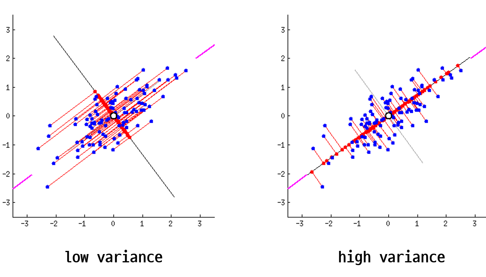

주성분 분석(PCA)은 가장 널리 사용되는 선형 차원 축소 기법입니다. PCA의 핵심 아이디어는 데이터의 분산을 가장 잘 설명하는 새로운 축, 즉 주성분(Principal Component)을 찾는 것입니다.

from sklearn.decomposition import PCA from sklearn.datasets import load_iris # 데이터 로드 data = load_iris() X = data.data # PCA 객체 생성 (2차원으로 축소) pca = PCA(n_components=2) # 데이터 변환 X_pca = pca.fit_transform(X) # 변환된 데이터 출력 print(X_pca.shape) # (150, 2)
이 코드는 붓꽃 데이터셋을 2차원으로 PCA로 축소하는 예시입니다. 원래 4차원 데이터가 2차원으로 효과적으로 변환됩니다.